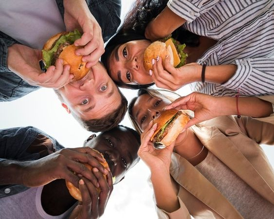

Na pitoresca cidade de Riverside, nas margens do rio, nasceu o "Supreme's Burguer". Foi há dez anos, em um
dia ensolarado de outono, que os amigos de infância, Lucas Pereira e Carla Martins, uniram forças para criar
um verdadeiro paraíso de hambúrgueres.
Lucas, o mestre das grelhas, trazia suas habilidades culinárias de anos de prática, enquanto Carla, a
criativa por trás dos sabores únicos, fazia experimentos na cozinha de sua avó desde criança. Juntos, eles
sonharam em redefinir o conceito de hambúrguer artesanal.
Desde o primeiro dia, o Supreme's Burguer tem sido uma ode à criatividade e ao sabor autêntico. Eles
incorporaram ingredientes frescos e locais em cada criação, dando vida a hambúrgueres inesquecíveis, como o
"Lucas Supreme" e o "Carla's Delight". A comunidade abraçou o local, e a fama de suas deliciosas criações se
espalhou rapidamente pela cidade.
Hoje, o Supreme's Burguer é um marco da cidade de Riverside, continuando a servir hambúrgueres artesanais de
alta qualidade, sempre com o toque especial de Lucas e Carla. Eles provaram que a paixão, a amizade e a boa
comida podem se unir para criar algo verdadeiramente extraordinário.
